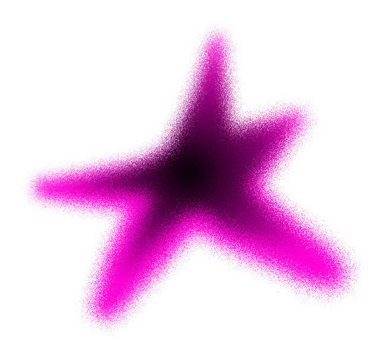
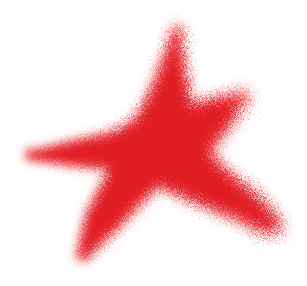

CENDERO / MATERIAL STUDY 01
Paint, not pixels.
Canvas · static · size-aware
Our paint
Split comparison
Figma


JavaScript rendering
Optically tuned. Actual sizes.
Each size is rendered independently.